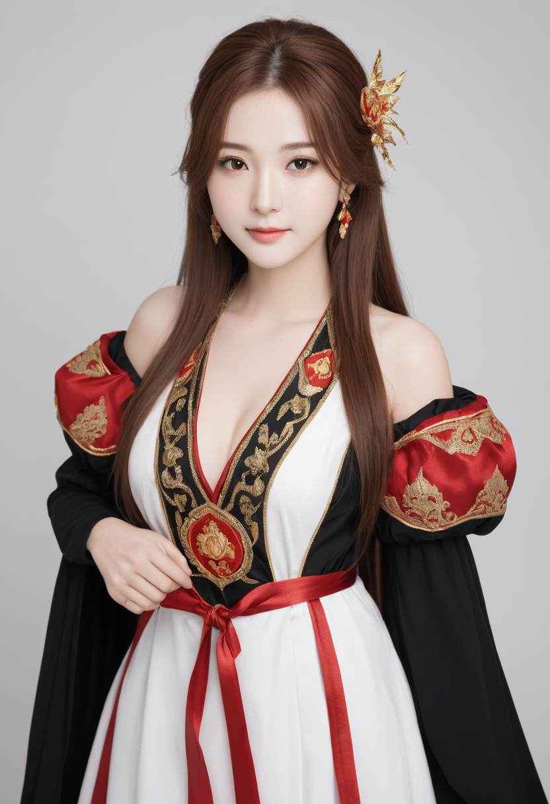
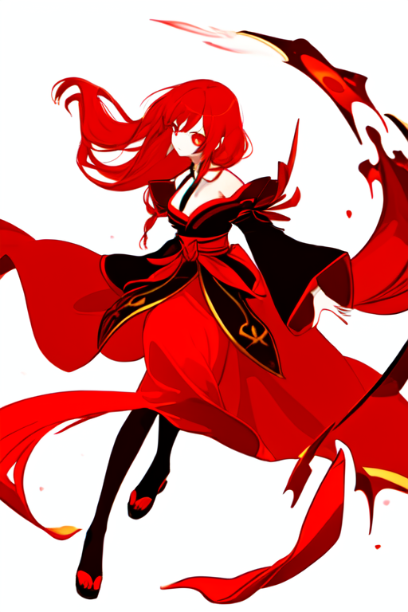
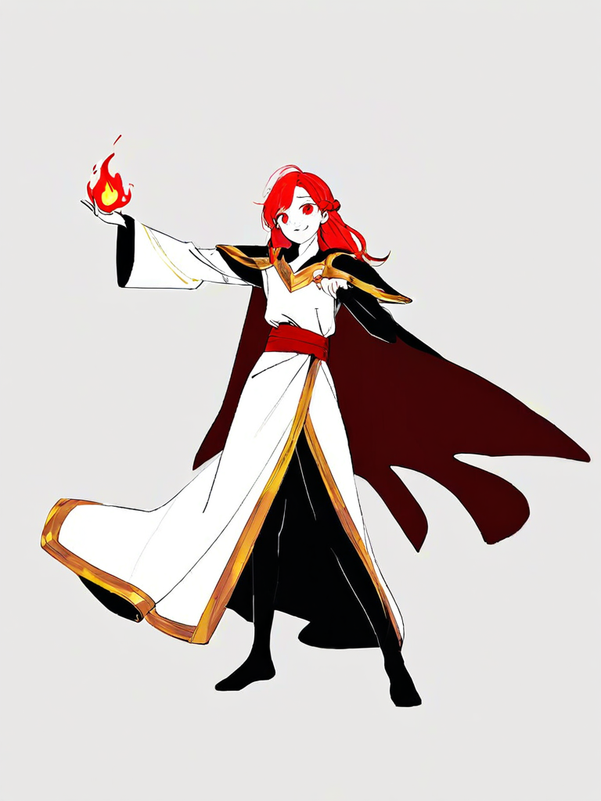
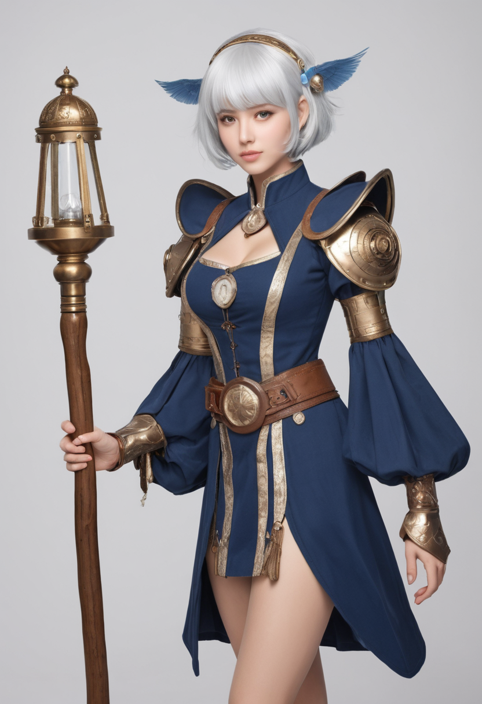
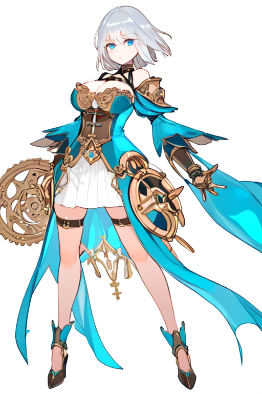

《星骸回响》v10 · 现成模型组合对比
2026-08-15 · 停用 Illustrious（模型损坏出噪点）· 用服务器现成模型跑两轮：Ming 全能人物光影（SDXL）/ Strawberry-α（SD1.5）· 艾琳少女 + 诺亚御姐
Illustrious 下载文件损坏 → 全图噪点（已弃）。Ming 与 Strawberry 背景区检测正常（非噪点）。Strawberry 白底 100% 达标；Ming 背景浅灰。请人眼判断画质/风格。
艾琳 · 少女
A · Ming 人物光影（SDXL 832×1216）

背景浅灰
B · Strawberry（SD1.5 512×768）

纯白底 ✓
基准 · Neta v6（此前方案）

白底 ✓
诺亚 · 御姐
A · Ming 人物光影（SDXL）

背景浅灰
B · Strawberry（SD1.5）

纯白底 ✓